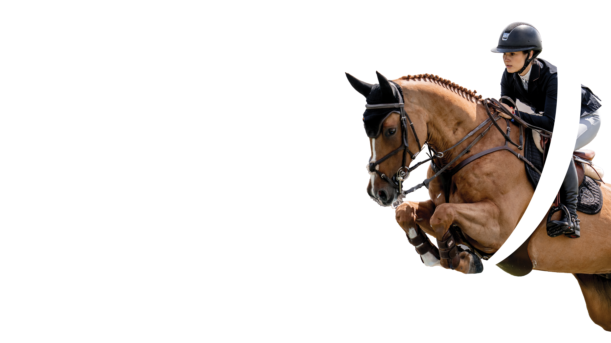

11
Četvrtak
Lipanj 2026.
- CSIYH1* — mladi konji
- CSI1* — uvodne utakmice
- Otvaranje turnira

FEI WORLD CUP · CSI2*-W | CSI1* | CSIYH1*
11.–14. lipnja 2026. · Hipodrom Zagreb
FEI World Cup u preponskom jahanju vraća se u Zagreb nakon dvadeset godina. Četiri dana međunarodnih utakmica, otvoren za publiku.
11.–14. lipnja 2026.
Zagreb će od 11. do 14. lipnja ponovno biti domaćin međunarodnog preponskog natjecanja iz kalendara Fédération Équestre Internationale, čime se nakon dvadeset godina u grad vraća razina FEI World Cupa. Natjecanje se održava na zagrebačkom Hipodromu u sklopu 70. Lipanjskog turnira i tijekom četiri dana okuplja međunarodnu konkurenciju jahača i konja koji u Zagrebu osvajaju bodove za ukupni poredak i plasman u završnicu sezone.
Program uključuje kategorije CSI2*-W, CSI1* i CSIYH1*, raspoređene kroz više natjecateljskih dana, dok je središnji događaj Grand Prix utakmica za Pehar Grada Zagreba. Očekuje se dolazak natjecatelja iz više od petnaest zemalja, zajedno s njihovim timovima i konjima, što Lipanjski turnir ponovno pozicionira među relevantna međunarodna konjička događanja u ovom dijelu Europe.
Održavanje natjecanja ove razine nadovezuje se na dugu tradiciju Lipanjskog turnira, jednog od najstarijih konjičkih natjecanja u Hrvatskoj, ali istovremeno postavlja i jasne organizacijske zahtjeve — od infrastrukture i uvjeta na terenu do provedbe tehničkih i sigurnosnih standarda koje propisuje FEI. Upravo ta kombinacija kontinuiteta i zahtjevnosti definira ovogodišnje izdanje turnira.
Uz sportski program, događanje uključuje i sadržaje za posjetitelje, a ulaz na natjecanje bit će besplatan.
O natjecanju
Lipanjski turnir održava se na zagrebačkom Hipodromu više od sedam desetljeća i jedno je od najdugovječnijih konjičkih natjecanja u Hrvatskoj. Kroz to vrijeme bio je stalni dio domaćeg sportskog kalendara i mjesto na kojem su domaći jahači redovito nastupali uz međunarodnu konkurenciju.
Za mnoge jahače upravo je ovdje počinjao prvi ozbiljniji iskorak prema međunarodnoj sceni, dok je publici omogućavao kontinuirano praćenje preponskog jahanja. Ta dvostruka uloga — razvoj domaćih sportaša i prisutnost stranih natjecatelja — određivala je turnir kroz godine.
Sedamdeseto izdanje, koje se održava od 11. do 14. lipnja 2026., vraća u Zagreb FEI World Cup razinu natjecanja nakon dvadeset godina. Time se program turnira pomiče prema zahtjevnijim utakmicama, s višim parkurima i tehnički složenijim postavama koje traže veću preciznost i iskustvo.
Program uključuje kategorije CSI2*-W, CSI1* i CSIYH1*, raspoređene kroz četiri dana, dok je Grand Prix za Pehar Grada Zagreba središnja utakmica turnira. Lipanjski turnir se pritom nastavlja u svom prepoznatljivom formatu, ali ove godine jasno ulazi u okvir natjecanja više razine.
Lokacija
Natjecanje se održava na zagrebačkom Hipodromu.
Pristup lokaciji tijekom turnira organiziran je kroz označene ulaze i zone kretanja, uz privremenu regulaciju prometa i parkiranja u neposrednoj blizini. Preporučuje se pratiti upute na licu mjesta i planirati dolazak s obzirom na očekivanu posjećenost.
Karta prostora i upute za dolazak dostupni su na ovoj stranici.
Program
Program uključuje međunarodne utakmice u kategorijama CSI2*-W, CSI1* i CSIYH1*, uključujući World Cup kvalifikacijsku razinu te natjecanja za mlade konje. Uz sportski dio, tijekom četiri dana održavanja priprema se i opsežan prateći program za posjetitelje, s naglaskom na sadržaje za djecu i obitelji, kao i dodatne aktivnosti u okviru Sport Festa.
Uskoro objavljujemo: raspored utakmica, satnicu, službeni program, informacije za publiku i detalje o popratnim sadržajima.
Obavijesti meZa natjecatelje
Zagrebački Hipodrom nalazi se unutar urbanog tkiva grada, na južnoj obali Save, svega nekoliko minuta vožnje od centra. Takva pozicija relativno je rijetka za konjičke objekte ove veličine i omogućuje izravan pristup gradskoj infrastrukturi, ali istovremeno znači da se dolazak i logistika odvijaju u uvjetima gradskog prometa, uključujući mostove preko Save koji u vršnim satima mogu biti opterećeni.
Prostor Hipodroma proteže se uz rijeku i obuhvaća otvorene površine koje se za potrebe turnira organiziraju u natjecateljsku arenu, zagrijavanje i stajski dio. Zagrebačko konjičko okruženje čini mreža klubova u Zagrebu i okolici, s više od deset aktivnih sportskih klubova i kontinuiranim kalendarom natjecanja tijekom godine.
Smještaj konja organiziran je u montažnim boksovima unutar hipodromskog prostora, uz prethodnu rezervaciju kroz prijavni proces. Show office nalazi se u neposrednoj blizini natjecateljske arene i staja te predstavlja referentnu točku za sve operativne informacije po dolasku.
Zagreb kao domaćin nudi razvijenu hotelsku i ugostiteljsku infrastrukturu. U neposrednoj blizini Hipodroma, u Novom Zagrebu, nalaze se hoteli različitih kategorija, dok je centar grada udaljen desetak minuta vožnje i nudi širi izbor smještaja, restorana i pratećih sadržaja.
Službene propozicije natjecanja — uvjeti, kategorije, satnica.
Pregledaj PDFPostupak prijave (entries) i rokovi za nominacije i definitive entries.
Pregledaj PDFDokumentacija, uvoz konja, pregled po dolasku.
Pregledaj PDFArena, podloga, warm-up uvjeti, dimenzije.
Pregledaj MAPOznačene zone: arena, warm-up, staje, parking, ulazi, show office.
Pregledaj INFOSatnica dolaska, prijem konja, ulaz u staje.
PregledajZa posjetitelje
Lipanjski turnir otvara zagrebački Hipodrom publici i vraća međunarodno preponsko jahanje u prostor grada, na nekoliko minuta od centra Zagreba. Tijekom četiri dana natjecanja Hipodrom postaje mjesto na kojem se prati vrhunski sport, ali i provodi vrijeme na otvorenom, bez formalnosti koje inače prate ovakva događanja.
Natjecanja se odvijaju kroz dan, uz izmjenu ritma — od tehnički zahtjevnih utakmica do završnica koje se odlučuju u sekundama i okupljaju publiku oko arene. Upravo taj trenutak, kada nekoliko najboljih ulazi u završnicu, definira atmosferu turnira.
Uz sportski program, prostor Hipodroma tijekom dana funkcionira kao otvorena zona za posjetitelje. U suradnji sa Sport Festom prisutni su partneri i izlagači sportske opreme, uz prodajne štandove i sadržaj vezan uz aktivan način života. Gastro zona prati program tijekom cijelog dana.
Dio sadržaja namijenjen je djeci — dječji kutci, šetnje na konjima i druženje s maskotom Purgijem organizirani su u odvojenom dijelu prostora.
U večernjim satima program se nastavlja u opuštenijem formatu, uz party i slobodan ulaz.
FEI World Cup utakmice i Grand Prix za Pehar Grada Zagreba.
Izlagači, sportska oprema, aktivnosti i sadržaji aktivnog načina života.
Dječji kutci, šetnje na konjima i maskota Purgi.
Hrana i piće tijekom cijelog dana, do večernjeg party programa.
Sponzori i partneri
Povratak FEI World Cup natjecanja u Zagreb važan je sportski i organizacijski iskorak koji ne bi bio moguć bez podrške partnera, sponzora i institucija koje prepoznaju vrijednost međunarodnog sporta, tradicije i razvoja konjičkog sporta u Hrvatskoj.
Zainteresiranim partnerima dostupne su sponzorske mogućnosti kroz različite razine vidljivosti i aktivacije.
partners@worldcupzagreb.comMediji
Praćenje Lipanjskog turnira na razini FEI World Cup natjecanja organizira se uz prethodnu najavu dolaska i, prema potrebi, akreditaciju. Medijima je omogućen pristup natjecanju, izjavama i foto materijalima u skladu s pravilima događanja i organizacijom na terenu.
Službena priopćenja i objave za preuzimanje.
Visokorezolucijska galerija za uredničku upotrebu.
Preuzmi ZIP galerijuKontakt
Organizator 70. Lipanjskog turnira i FEI World Cup natjecanja u Zagrebu.